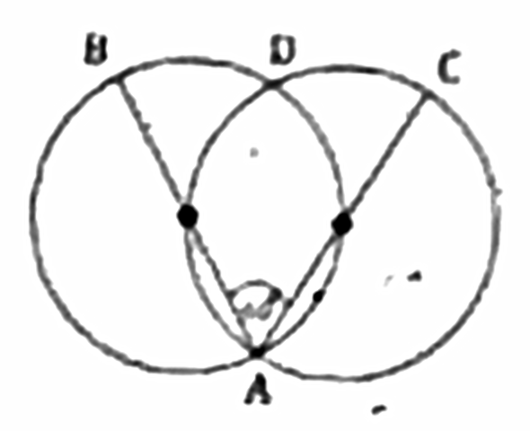

לא לפתוח את הסוגריים – לזהות את a + c ואת b + d כשני גושים.
נבדקהפתרון תואם את מפתח התשובות של הספר.
שאלה 2נוספה מתמונה
אמא דובה צריכה לאגור מלאי של 100 ק"ג מזון כדי להיכנס לשנת החורף. האם אוספת 45 ק"ג מזון בשעה וחצי. לאם יש במערה 2 גורים, שכל אחד מהם אוכל חצי ק"ג מזון ב־18 דקות.
כמה זמן (בשעות) זקוקה האמא דובה כדי לאגור 100 ק"ג של מזון?
הצגת הפתרון
התשובה הסופית3תשובה (3)3¾
דרך הפתרון והסבר
האם: 45 ק"ג ב־1.5 שעות = 30 ק"ג בשעה. כל גור: ½ ק"ג ב־18 דקות = 53 ק"ג בשעה, ושני גורים 103. נטו: 30 − 103 = 803 ק"ג בשעה ⇒ 100 ÷ 803 = 3¾ שעות.
מוקשים נפוצים
להמיר את 18 הדקות לשעות לפני שמחסירים קצבים.
נבדקהפתרון תואם את מפתח התשובות של הספר.
שאלה 3נוספה מתמונה
x = 2¹⁰ + 2¹⁰
y = 12¹¹ + 12¹¹
xy = ?
הצגת הפתרון
התשובה הסופית2תשובה (2)2
דרך הפתרון והסבר
x = 2 · 2¹⁰ = 2¹¹. y = 22¹¹ = 12¹⁰. xy = 2¹¹2¹⁰ = 2.
מוקשים נפוצים
2¹⁰ + 2¹⁰ = 2¹¹, לא 2²⁰.
נבדקהפתרון תואם את מפתח התשובות של הספר.
שאלה 4נוספה מתמונה

בסרטוט שלפניכם שני מעגלים חופפים שמרכזיהם הם O₁ ו־O₂ ורדיוסם r ס"מ. A ו־D הן נקודות החיתוך של שני המעגלים.
על פי נתונים אלו ונתוני הסרטוט, מה סכום אורכן של הקשתות הקצרות BD ו־DC (בס"מ)?
הצגת הפתרון
התשובה הסופית2תשובה (2)⅔πr
דרך הפתרון והסבר
AB ו־AC עוברים במרכזים, ולכן הזוויות BAD ו־DAC הן זוויות היקפיות במעגלים ברדיוס r. קשת שנשענת על זווית היקפית θ אורכה 2θ·r. הסכום 2r(∢BAD + ∢DAC) = 2r · 60° = 2r · π3 = ⅔πr.
מוקשים נפוצים
קשת = פעמיים הזווית ההיקפית, לא הזווית עצמה.
נבדקהפתרון תואם את מפתח התשובות של הספר.
שאלה 5נוספה מתמונה
כמה אחוזים מהווה הביטוי (x4 + x5) מתוך הביטוי (2.2x + 7x5)?